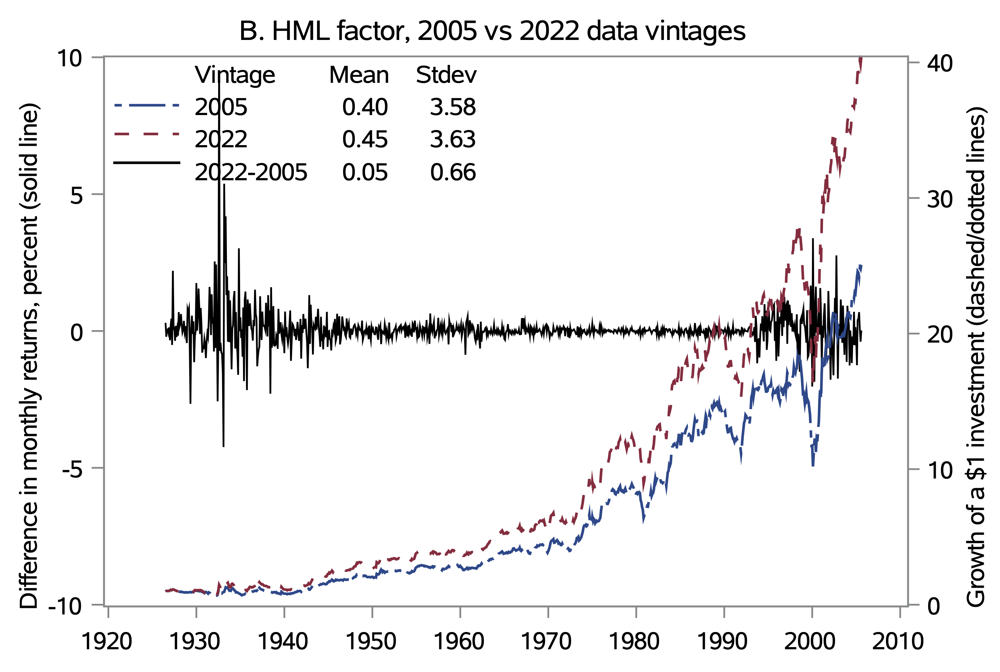
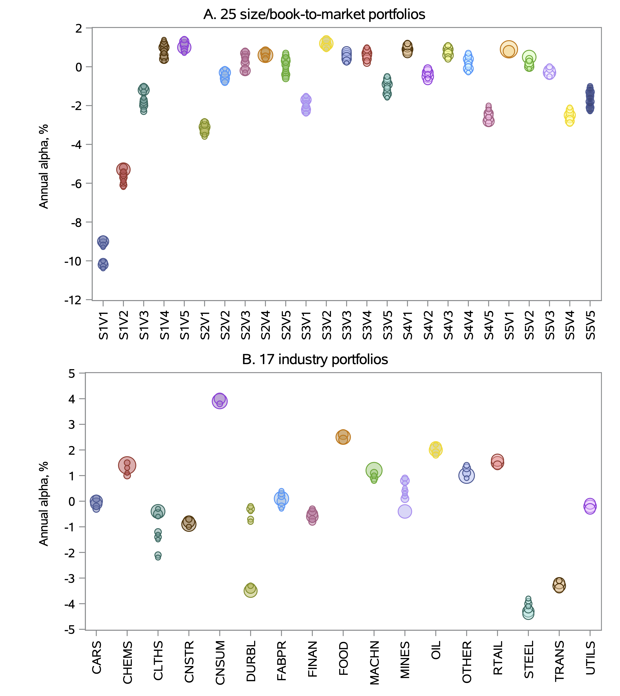
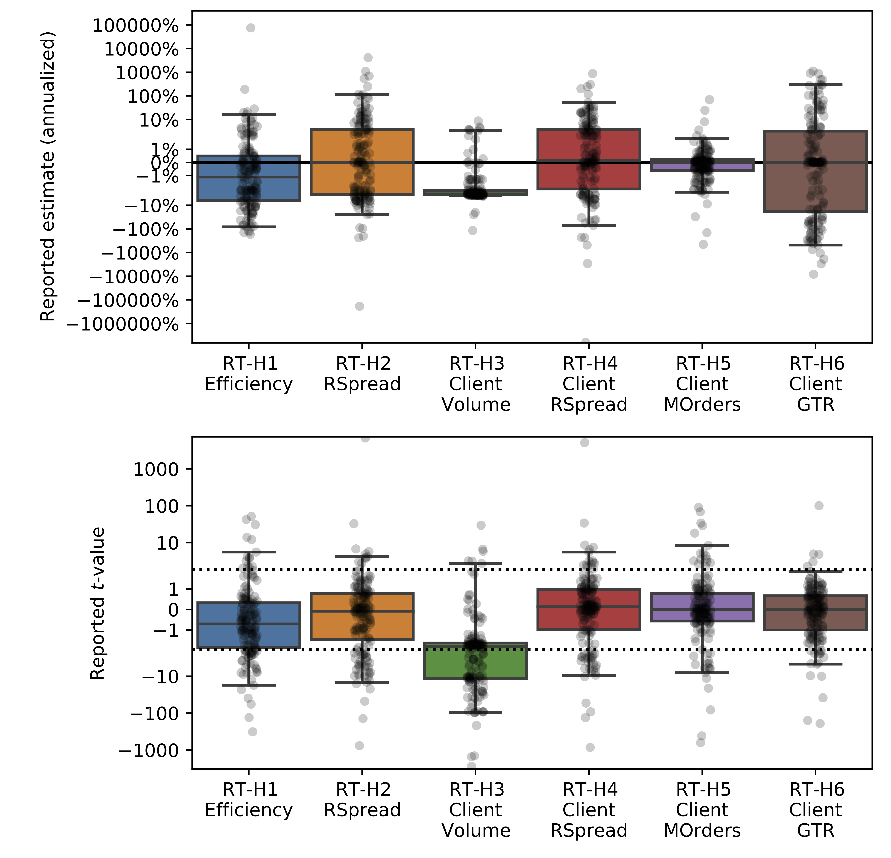
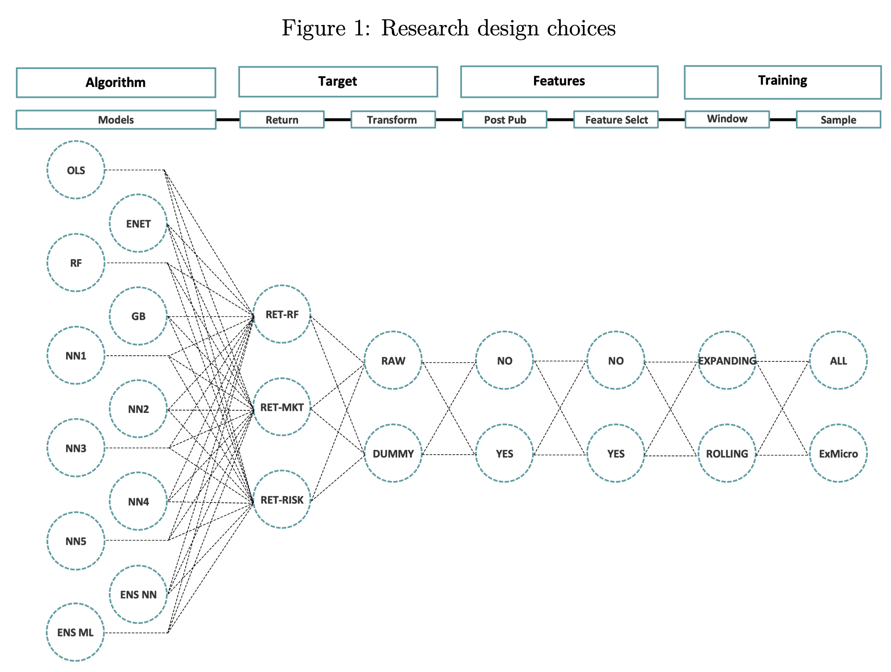
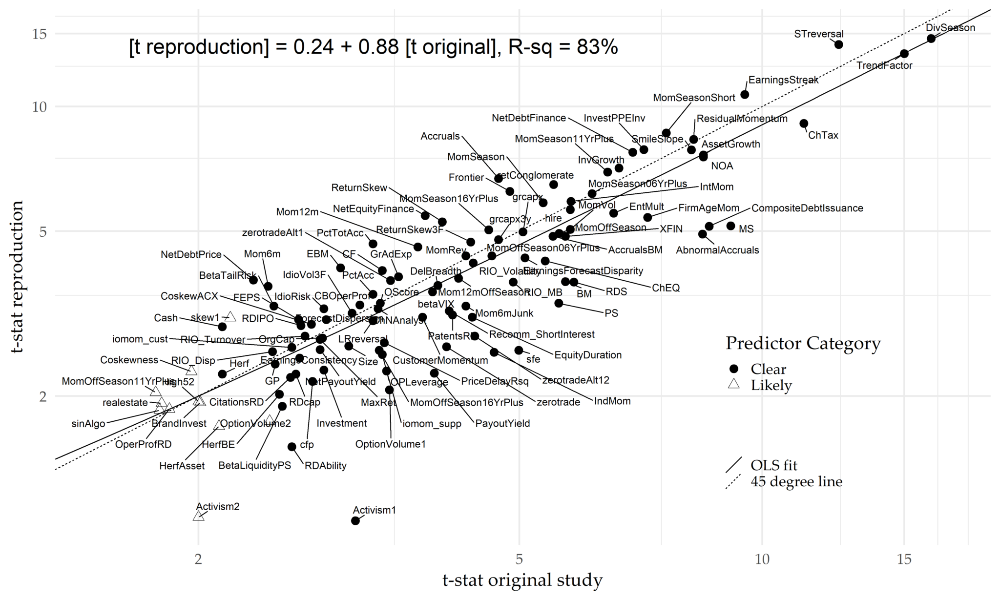
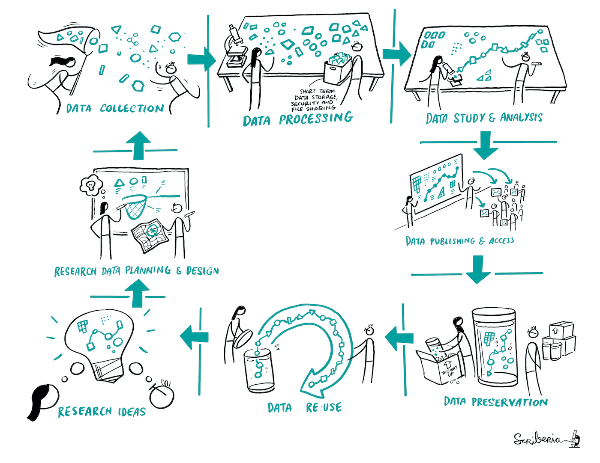

MATH60207: Lecture 10
Outline
- Methodological problems versus data-mining
- Replication and reproducibility
Replicable Finance Research
Idealized scientific research:
- Benefits from collaboration
- Benefits from openness and transparency
- Benefits from clear methodology
Replicable Finance Research
Empirical finance research in academia:
- Incentives not always aligned towards transparency. Publishing helps for:
- Reputation
- Funding future projects.
- Job security.
- Consulting opportunities.
- Limited transparency is common (proprietary datasets.)
Ideally research would involve common objectives, where conclusions can generate public goods, hence the idea behind publishing.
Does this make sense in empirical finance?
Replicable Finance Research
Empirical finance research in industry:
- Transparency hinders profit opportunities
- Collaboration is limited
- Methodology is often idiosyncratic
This is due to the fact that asymmetric information in markets is what creates opportunities for individuals.
- If you have multiple profit-maximizing traders with asymmetric information, you can’t have fully efficient markets (Grossman and Stiglitz 1980)
Replicable Finance Research
Question: If incentives are sometimes aligned against collaborative and open-source empirical finance research, should we expect research to be replicable?
Follow-up question: If incentives are that publishing is highly rewarded, can we expect published research to be “genuine” research?
It is an important issue in empirical finance:
- Recent studies in empirical finance, notably in asset pricing, have taken a turn towards testing the replicability of past findings.
- Most journals now require code availability for replicability and sharing of non-proprietary data.
- Top journals in finance have retracted papers recently because of replication issues.
Methodological Problems versus Data-Mining
Data mining, aka p-hacking:
- Repeated testing of “random” hypotheses until you have significant results.
- Objective is to generate exaggerated results in line with an incentive (i.e. publishing)
- Unethical practice which must be avoided
- Can be intentional, but also unintentional
Overfitting:
- Methodological issue
- Arise naturally in the course of any statistical analysis
- Makes it hard to generalize a model and take it out-of-sample
In conclusion, as good statisticians, our goal is to avoid data mining from our research methodology while limiting statistical bias when appropriate, and to recognize these issues when evaluating other researchers’ results.
Overfitting
Estimation of multiple different models in the same statistical analysis on the same data and picking the one that optimizes some objective function:
- R^2
- Log-likelihood function
- Information criteria
- Profits generated (backtest)
Models that suffer from overfitting tend to perform badly out of sample.
Overfitting - A Simple Model
Let X_{t},Y_{t} be our variables with Y_{t}=X_{t}\beta+\varepsilon_{t}
- E\left(\varepsilon_{t}X_{t}\right)=0 and \varepsilon_{t}\sim N(0,\sigma) i.i.d.
- \left\{X_{1,t},Y_{1,t}\right\} are the data for our main sample
- \left\{X_{2,t},Y_{2,t}\right\} are the data for a second sample
Problem
We want to use X to predict Y.
Suppose we want to minimize E\left[ \left( Y_{t}-X_{t}\theta\right)^{2}\right]
Ideally, we should use \theta=\beta. But \beta is unknown.
If we only had \left\{ X_{1t},Y_{1t}\right\} , we could minimize E\left[ \left( Y_{1,t}-X_{1,t}\theta\right)^{2}\right] \Rightarrow\widehat{\theta}=\widehat{\theta}_{OLS}
Overfitting
Fact
Q_{1}=\sum_{t=1}^{T}\left( \left( Y_{1t}-X_{1t}\beta\right)^{2}-\left( Y_{1t}-X_{1t}\widehat{\theta}\right)^{2}\right)
E\left( Q_{1}\right) =k\cdot\sigma^{2} where k= dimension of X
- OLS tends to underestimate prediction error (i.e. “overfit”)
Fact
E\left[ Q_{2}\right] =E\left[ \sum_{t=1}^{T}\left( \left( Y_{2t}-X_{2t}\beta\right)^{2}-\left( Y_{2t}-X_{2t}\widehat{\theta}\right)^{2}\right) \right] =-k\cdot\sigma^{2}
- The over-fitting in-sample hurts our performance out-of-sample.
- The more we over-fit, the more it hurts our forecast.
- To avoid overfitting, we should use models with similar performance in-sample and out-of-sample and techniques such as cross-validation.
Multiple Hypotheses Testing
Literature Review - Ioannidis (2005)
Numerous elements can cause results to be biased and invalid:
- Studies in the field are smaller
- Greater number and lesser preselection of tested relationships
- Greater flexibility in design, definitions, outcomes and analytical modes
- Greater financial and other interest in prejudice
- More teams are involved in a scientific field in chase of statistical significance
He concludes that it is likely for most scientific findings to be more false than true, being accurate measures of prevailing bias rather than actual rigorous results.
We have seen that in the context of empirical finance, financial incentives and flexibility in design can play a large role in driving results.
Multiple Hypotheses Testing
Literature Review - Ioannidis (2005)
Why are most medical findings false?
Definitions
- H_{0}: A null hypothesis either H_{0}=T or H_{0}=F
- S: A statistical test of H_{0}; either S=t or S=f
- \alpha: \Pr\left( S=f|H_{0}=T\right) This is the type I error rate (a.k.a. significance level.) Typically 5%
- 1-\beta: \Pr\left( S=f|H_{0}=F\right) This is the power of the test (i.e. 1- the Type II error rate)
- R: fraction of H_{0} that are F relative to the fraction that are T. If we only test one H_{0}\Rightarrow \Pr\left( H_{0}=F\right) =\frac{R}{R+1}
- PPV: Positive Predictive Value \equiv\Pr\left( H_{0}=F|S=f\right)
See xkcd
Ioannidis (2005)
Bayes Theorem implies
\begin{align*} PPV & =\Pr\left( H_{0}=F|S=f\right) =\frac{\Pr\left( H_{0}=F,S=f\right)}{\Pr\left( S=f\right)}\\ &=\frac{\left( 1-\beta\right) \cdot\Pr\left( H_{0}=F\right)}{\left( 1-\beta\right) \cdot\Pr\left( H_{0}=F\right) +\alpha\cdot\Pr\left( H_{0}=T\right)}\\ &=\frac{\left( 1-\beta\right) \cdot R}{\left( 1-\beta\right) \cdot R+\alpha} \end{align*}
\therefore Research findings are more likely right than wrong
\iff\left( 1-\beta\right) \cdot R>\alpha\approx0.05
Ioannidis (2005)
Implications
- Results from low power tests (i.e. small (1-\beta) \rightarrow 5\%) are more likely to be false than true if R<1.
- Beware of small samples.
- Theory helps if it raises R.
- Folk Theorem: Can theory justify anything?
Ioannidis (2005)
Repeated Testing
n \equiv number of H_{0} tested (but not reported) to produce 1 statistically significant result that is reported
Now,
PPV = \frac{\left( 1-\beta^{n}\right) \cdot R}{\left( 1-\beta^{n}\right) \cdot R+\left[ 1-\left( 1-\alpha\right) ^{n}\right]} \approx \frac{\left( 1-\beta^{n}\right) \cdot R}{\left( 1-\beta^{n}\right) \cdot R+\left[ 1-.95^{n}\right]}
Research findings are more likely right than wrong
\iff\left( 1-\beta^{n}\right) \cdot R>1-\left( 1-\alpha\right) ^{n}
Raising n can make it harder to satisfy this condition!
Multiple Hypotheses Testing
Literature Review - Chordia, Goyal, and Saretto (2020)
Asset pricing studies seek to answer a variety of research questions, but they usually share:
- A common question (i.e are expected stock returns predictable)
- At least one common dataset (i.e CRSP)
Sufficient grounds for researchers to be concerned about MHT in financial predictability studies.
Inference can only be made by making explicit assumptions about the data-generating process and the ability of researchers to filter unsound strategies.
Chordia, Goyal, and Saretto (2020)
In their study, MHT-adjusted thresholds for t-statistics of time-series alpha and cross-sectional FM regressions slopes are 3.8 and 3.4 respectively, implying 1,028 and 4,790 tests to be attempted to have a 0.50 probability of meeting the threshold.
Important There is no absolute standard of significance for hypothesis testing, only generally accepted guidelines for statistical research.
Important Also consider that authors usually need a theory, motivation or story to get published. Similar in a corporation.
➡️ This raises the R in Ioannidis’s formulas.
Other Problems in Empirical Finance
Many other potential issues are of concern in the field of empirical finance. We will discuss three:
- Data integrity and data revisions.
- Non-standard errors (i.e. researcher-level estimation uncertainty).
- Use of ML/AI.
Data integrity and data revisions
Noisy Factors – Akey, Robertson, and Simutin (2023)
Understanding the variations between the significance of the Fama-French factors depending on the time they were downloaded.
They find that factor returns differ substantially depending on factor vintage, which causes a third of the anomaly long-short portfolios to lose statistical significance.
How is that possible?
- Small discrepancies in how the data was gathered
- Calculation differences in rounding effects
- Retroactive corrections
Question If such small deviations in methodology have such an important impact on study results, what other hidden issues could exist which are currently overlooked by researchers?
Noisy Factors – Akey, Robertson, and Simutin (2023)
Historical data from the Wayback Machine!
Noisy Factors – Akey, Robertson, and Simutin (2023)
HML is the most affected factor

Noisy Factors – Akey, Robertson, and Simutin (2023)
α of well-diversified portfolios are significantly affected.

Non-Standard Errors
Non-Standard Errors – Menkveld et al. (2024)
The first crowd-sourced empirical paper in Economics/Finance. The project seeks to expose the variation across researchers for results they report independently testing the same hypotheses on the same sample.
343 authors from 34 countries answering the same asset pricing questions:
- How large are non-standard errors in financial economics?
- Can NSE be “explained” in the cross-section of researchers?
- Does peer-feedback reduce non-standard errors?
- Are researchers accurately aware of the size of NSE?
Non-Standard Errors – Menkveld et al. (2024)

Design Choices and Machine Learning – M. Chen, Hanauer, and Kalsbach (2024)

Additional Issues with LLMs
Replicability
- “Closed” models (like OpenAI’s) change constantly
- They are probabilistic models, so results vary with each execution
Researcher Degrees of Freedom:
- Even minor changes to the prompt can completely alter the results
- Since the models are probabilistic, simply repeating the experiment can yield different results
- With billions of parameters, almost anything can be achieved with some fine-tuning
Replication Crisis in Finance?
- Baker (2016): 1,500 scientists lift the lid on reproducibility
- More than 70% of researchers have tried and failed to reproduce another scientist’s experiments, and more than half have failed to reproduce their own experiments.
- Although 52% of those surveyed agree that there is a significant ‘crisis’ of reproducibility, less than 31% think that failure to reproduce published results means that the result is probably wrong, and most say that they still trust the published literature.
- Harvey (2019) : Replication policies at top finance journals are lagging behind economics journals.
- Harvey was editor of the Journal of Finance and try to develop a unified policy across all top finance journals
Replication Crisis in Finance?
- Jensen, Kelly, and Pedersen (2023): Is There A Replication Crisis In Finance?
- The majority of asset pricing factors: (1) can be replicated, (2) can be clustered into 13 themes, the majority of which are significant parts of the tangency portfolio, (3) work out-of-sample in a new large data set covering 93 countries, and (4) have evidence that is strengthened (not weakened) by the large number of observed factors.
- Harvey (2022): Be Skeptical of Asset Management Research
- Argues that economic incentives distort outcomes in both academic and practitioner finance research.
- Fišar et al. (2024): Reproducibility in Management Science increased significantly following mandatory code and data sharing policies.
A Problem in the Industry?
Harvey (2022): yes, but incentives make it less of a problem than in academia.
I believe p-hacking is less of a problem in asset management than in academia—in particular, less of a problem in the proprietary research that is the foundation for a product. The reasons are simple. First, in the presence of a performance fee, the asset management company’s research needs to be optimized in a way that maximizes the chances of repeatable performance. This means the asset manager does not choose the best-performing backtest, because it is the one that is most likely to be overfit. If the manager were to launch a backtest-overfitted strategy, it would likely fail and thereby generate no performance fees. The second reason is reputation. Academic tenure has no equivalent in asset management. If an asset manager’s products disappoint because of overfitting, the firm’s investors will flee. This market mechanism naturally minimizes the overfitting. That said, asset management companies still produce a substantial amount of low-quality research. Similar to the academic research, investors need to be skeptical.
Replication Issues
Literature – Hou, Xue, and Zhang (2020)
One of the groups that has attempted to measure the robustness of past asset pricing studies by re-assessing the strength of established factors.
Study design:
- Controlling for micro-caps (removing their impacts)
- Looking for high certainty (high t-statistics)
Conclusion Most anomalies are not replicable empirically, and those that are successfully replicated are so with magnitudes that are often lower.
Replication issues
Literature – Hou, Xue, and Zhang (2020)
Emphasis on the impact of controlling for micro-cap stocks:
- Account for 3% of stock market value yet 60% of stocks.
- By using equal weighted-returns, many studies significantly overweight their impact.
- In practice, the high costs of trading micro-caps can explain why anomalies deemed significant exist.
Is it realistic to consider strategies to be significant almost uniquely on the behavior of this (small) sub-sample of equities?
Most practical implementations of researched investing strategy will not prioritize micro-caps in their design!
Conclusion While the influence of micro-caps is overwhelming in asset pricing studies, it is almost nonexistent in actual money management.
Some Hope?
Literature – A. Y. Chen and Zimmermann (2021)
For Chen and Zimmerman, past replications studies measure predictability deviating from the methods employed in original research. - If the method is different, for sure the results will be different!
Important Replication must be undertaken with the exact same conditions as in the original study. The methodology must be followed precisely and assumptions be extremely limited.
- Many replications show a t-statistics of 6.0 or more, with a corresponding value of approximately 0.000000002, which is EXTREMELY hard to data-mine.
Some Hope? A. Y. Chen and Zimmermann (2021)

Conclusion
Importance of ethical practices amongst scientists:
- Employing correct statistical methods
- Good intentions and avoiding manipulations
- Limiting negative incentives
- Promoting transparency and collaboration
There is no escaping it, if your initial method is wrong, every conclusion that ensues is wrong.
Rampini, Viswanathan, and Vuillemey (2019)
Retracted: Risk Management in Financial Institutions
The authors hereby retract the above article, published in print in the April 2020 issue of The Journal of Finance. A replication study finds that the replication code provided in the supplementary information section of the article does not reproduce some of the central findings reported in the article. Upon reexamination of the work, the authors confirmed that the replication code does not fully reproduce the published results and were unable to provide revised code that does. Therefore, the authors conclude that the published results are not reliable and that the responsible course of action is to retract the article and return the Brattle Group Distinguished Paper Prize that the article received. The authors deeply regret the damage this caused to the journal and the scholarly community. The specific contributions of the authors to the article were as follows: the first and second author provided the theoretical hypothesis; all three authors jointly designed the empirical approach and identification strategy; the third author constructed and handled the data, implemented the empirical analysis, and provided the empirical results as well as the replication data and code. The third author states that the original data and code that produced the published results were lost. The first and second author were not notified of the loss of the original data and code at the time it occurred and had no prior knowledge of the issues with the replication data and code provided to the journal.
The Turing Way: An “ideal” research methodology
As technological advances become prevalent in corporate and academic research, scientists have the possibility of making their work fit for replication with adequate documentation and rigorous exposition.
The Turing Way Project:
- Started in 2019
- Guide for researcher outlining the best standards in terms of scientific methodology
- Open-source
- Multi-disciplinary
➡️ When researchers employ transparency in their research - in other words, when they properly document and share the data and processes associated with their analyses - the broader research community is able to save valuable time when reproducing or building upon published results.
The Turing Way: Research Cycle

The Turing Way: Definitions

The Turing Way: Guide for Reproducible Research

The Turing Way: Added Advantages
- Track a complete history of your research
- Facilitate collaboration and review process
- Publish validated research and avoid misinformation
- Write your papers, thesis and reports efficiently
- Get credits for your work fairly
- Ensure continuity of your work
The Turing Way: Barriers to reproducibility
- Limited incentives to give evidence against yourself
- Publication bias towards novel findings
- Held to higher standards than others
- Not considered for promotion
- Big data and complex computational infrastructure
- Being reproducible does not mean the answer is right
- Takes time
- Support additional users
- Requires additional skills
References

MATH60207